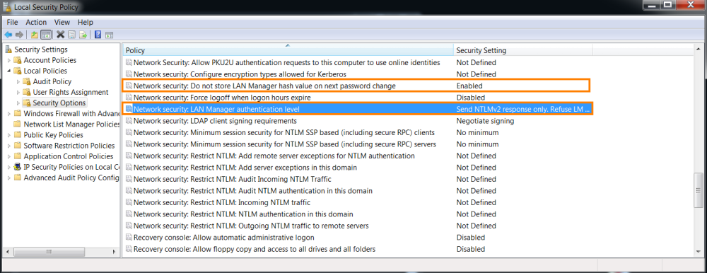

Windows 7
Windows 7: increase Network Authentication Security1. To enter in the settings:
◇ We have to type in the search bar for: “Edit group policy”
Then we have to set the options
“Network security: Do not store LAN Manager hash value on next password exchange” on
Enabled to avoid to store weak LM hash
"Network security: LAN Manager authentication level" send NTLMv2 response only
 ◇ or open Run dialog using keyboard shortcut WINDOWS KEY+R, type gpedit.msc and click OK.
We have to go to “Computer Configuration” → “Windows Settings” → “Security Settings” → “Local Policies” → “Security Options”
Then we have to set the options
“Network security: Do not store LAN Manager hash value on next password exchange” on
Enabled to avoid to store weak LM hash
"Network security: LAN Manager authentication level" send NTLMv2 response only